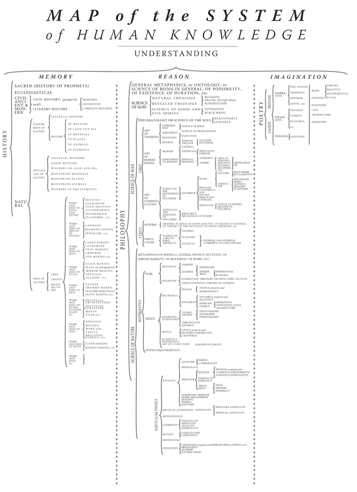

维基入口
『文件』绝对是很差很差的保存形式，无论是html，还是mht，还是屏幕截图。因为它们会让信息变得臃肿、难以一目了然，从而淹没信息的价值。我曾经保存过几百个mht网页，结果要找文章时非常痛苦，还不如重新上网搜关键词。
其次，『收藏』也是比较差的保存形式，无论是微信的文章收藏，还是知乎的收藏夹，都不推荐。尽管『收藏』功能非常方便，但你会发现那些东西你只是给它们做了个标签而已，它们还是原来的样子，还是别人的，并不是属于你的。随着你收藏的文章越来越多，『收藏』的价值也越来越低。
- 喜欢的东西，复制到云笔记保存下来，掐头去尾，把花里胡哨的格式通通去掉，只留下最重要的信息本身。给文章起一个按自己方式理解的标题，如果有同类型文章也可以把关键段落凑在一起。
- 隔一段时间就把那些看起来不再惊艳和佩服的文章删除掉，因为你的思想会进步，30岁回看20岁时呕心沥血的收藏会发现自己当年多么偏激和中二。评论性文章和鸡汤文尤其如此。
- 不要舍不得删收藏。知识库臃肿对你一点好处也没有。
- 不要收藏不明觉厉的文章，没法为己所用的知识再牛也没意义。
- 你真的需要收藏的是那些你看懂了、觉得很有用、但一时没法消化完全的知识，或者信息量很大、以后可能还有些场合会需要引用到/拿来吹牛逼的知识，或者信息整理总结得特别好的文章，这些是最有价值的。等你完全理解和消化了文章的观点，变成自己的东西时，这篇文章留不留着反而不那么重要了，因为可能你自己都会写了。
狄德罗和达朗贝尔之树

十八世纪，现代百科全书的奠基人，《百科全书，或科学、艺术和工艺详解词典》的主编德尼・狄德罗与他的副编让·勒朗·达朗贝尔在他们的百科全书中，为人类纂写了一个总结了当时整个知识系统的知识地图，标题译成英文为『Map of the System of Human Knowledge』，学术界称之为狄德罗和达朗贝尔之树（the tree of Diderot and d'Alembert）或具象人类知识系统（Figurative system of human knowledge）
百科全书，Encyclopédie，词根是cycl，来自circ，圆。百科全书的意义不在于罗列繁多的条目，容纳大量的知识，而在于它内部结构的完美，对知识的有序整理。Circle. 人类知识体系本身就是完满迷人的。
狄德罗和达朗贝尔将整个人类的知识树的根归于理解（Understanding）
理解（Understanding）下面分了三大分支——记忆（Memory），理智（Reason），想象（Imagination）。
这三大块对应的，是三个大的科目——历史（History），哲学（Philosophy），诗歌（Poetry）[注：此处的诗歌由下文的内容看来已经不是诗歌的本意，而是更高层面的艺术（Art）相关的内容了]
历史
- 神圣历史（先知历史）
- 教会历史
- 文明史，古代史，自然史
- 文明史（准确地说）［译注：括号里的内容是原文的内容(Properly Said)。该行的意思大致为『公民社会的历史』］
- 回忆录
- 考古
- 完整的历史
- 文学史
- 文明史（准确地说）［译注：括号里的内容是原文的内容(Properly Said)。该行的意思大致为『公民社会的历史』］
- 自然史
- 自然的统一性［译注：这份知识树诞生之时还没有达尔文的进化论，但无伤大雅］
- 天体史
- …的历史
- 流星
- 地球与海洋
- 矿物
- 植物
- 动物
- 元素
- 自然的差异性
- 天体奇观
- 大流星体［译注：小行星］
- 陆地和海洋奇观
- 巨大的矿石［译注：原文为Monstrous Minerals，之后的几项亦如是］
- 巨大的植物
- 巨大的动物
- 元素的奇迹［译注：引申为自然灾害］
- 自然的使用
- 艺术，工艺，制造［译注：下文中的使用，英文为Work and Uses，便于理解，合二为一］
- 金，银的使用 （采矿，金匠，金纺，金图，银匠，压片，等等…）
- 珍惜石料的使用（宝石，钻石切割，珠宝，等等…）
- 铁的使用（大型工厂，锁匠，工具制作，军械，枪械制作，等等…）
- 玻璃的使用（玻璃制作，平板玻璃，镜面制作，配镜片，玻璃工，等等…)
- 皮草的使用（皮匠，麂皮制作，皮革商，手套制作，等等…）
- 石材，石膏，石板的使用（实用的建筑，实用的雕塑，石匠，瓦工，等等…）
- 丝绸的使用（纺纱，铣削，作品，锦缎面料，等等…）［译注：作品该词翻译得很牵强，英文为Work，法文为Ouvrages］
- 羊毛的使用（制衣，制帽，等等…）
- 等等… ［译注：原文就是Working and Uses, etc. ］
- 艺术，工艺，制造［译注：下文中的使用，英文为Work and Uses，便于理解，合二为一］
- 自然的统一性［译注：这份知识树诞生之时还没有达尔文的进化论，但无伤大雅］
//『记忆』或者说『历史』部分的内容就是这样了，总结来说分狭义上的历史与广义上的历史，广义上的自然史又有了几分地理或博物学的味道。切题的看，这里的内容都是记忆即可理解的。而唯一的疑问是各种自然资源的使用为什么是历史呢？答案或许，也就是《天工开物》要告诉我们的内容。
哲学
- 基础形而上学，或者存在论，或者存在、可能性、持续时间等科学
- 神学
- 自然神学
- 启示神学 (自然神学与启示神学一同发展出了宗教，据此，通过滥用，也有了迷信) [译注：原文的关联词是whereby, through abuse。同时迷信的原文是superstition，作者是法国启蒙主义思想的领导者，有否认宗教的倾向。]
- 凶吉科学[译注：Science of good and evil spirits]
- 卜筮
- 黑魔法
- 人学
- 圣灵或灵魂科学
- 理性的
- 感性的
- 逻辑学
- 思维的艺术
- 理解
- 概念的科学
- 判断
- 命题的科学
- 说理
- 归纳的科学
- 方法
- 演示 [译注：Demonstration]
- 分析
- 综合
- 演示 [译注：Demonstration]
- 理解
- 记忆的艺术
- 记忆
- 先天的
- 后天的
- 偏见
- 象征
- 记忆的补充
- 写作
- 印刷
- 字母表
- 密码
- 写作，印刷，阅读，解码的艺术
- 拼写法
- 写作，印刷，阅读，解码的艺术
- 记忆
- 交流的艺术
- 表达的方法
- 语法
- 象征 ［译注：原文Sign，希腊动词Symballein，意为To put together。可以理解为修辞法］
- 姿势
- 哑剧
- 雄辩
- 字符
- 表意文字
- 象形文字
- 纹章学
- 姿势
- 韵律学
- 结构
- 句法
- 语言学
- 批判
- 教育学
- 学习的选择
- 教导的礼仪
- 象征 ［译注：原文Sign，希腊动词Symballein，意为To put together。可以理解为修辞法］
- 语法
- 表达的质量
- 修辞
- 诗歌的机制 [译注：Mechanics of Poetry]
- 表达的方法
- 思维的艺术
- 伦理学
- 基本
- 善恶，责任，道德，道德的必要性，等等 的基础科学
- 特殊
- 法律与法理学
- 自然
- 经济
- 政治 （政治与经济结合发展——内政与外交，海陆贸易）
- 法律与法理学
- 基本
- 圣灵或灵魂科学
- 自然科学
- 人体，基础物理，范围，不可入性，运动，字词，等等的形而上学
- 数学
- 纯数学
- 算术
- 数
- 代数
- 基础
- 无穷
- 微分
- 积分
- 几何
- 基础（军事的建筑，谋略）
- 超越（航线的理论）
- 算术
- 混合
- 力学
- 静力学
- 静力学，准确地说
- 流体静力学
- 动力学
- 动力学，准确地说
- 弹道学
- 流体动力学
- 水力学
- 航海，造船
- 静力学
- 几何天文学
- 宇宙学
- 天体绘图
- 地理学
- 水文学
- 年代学
- 时钟
- 宇宙学
- 光学
- 光学，准确地说
- 屈光学
- 反射光学
- 声学
- 气动学
- 猜测的艺术，概率分析
- 力学
- 物理数学
- 纯数学
- 特别地物理 [译注：Particular Physics，结合后文可理解为生物-Biology]
- 动物学
- 解剖学
- 简单
- 比较
- 生理学
- 医学
- 卫生学
- 卫生学，准确地说
- 化妆用地（骨科）［译注：原文Cosmetics, 个人理解为整容相关］
- 运动（体操）
- 病理学
- 符号学
- 治疗
- 饮食
- 手术
- 药物
- 卫生学
- 兽医学
- 马类圈养
- 狩猎
- 渔猎
- 鹰狩
- 解剖学
- 物理天文学
- 占星学
- 司法的
- 物理的
- 占星学
- 气象学
- 宇宙学
- 天体绘图
- 高空气象学
- 地理学
- 水文学
- 植物学
- 农业
- 园艺
- 矿物学
- 化学
- 化学，准确地说（烟火制造术，染色法）
- 冶金学
- 炼金术
- 自然魔法
- 动物学
//在『Reason』即说理的内容上，可以看到现代科学的雏形，十八世纪，牛顿和莱布尼茨都已辞世，道尔顿才刚刚出生，蒸汽机已经出现。同时我们可以发现，宇宙学分别出现在了数学与生物的领域，基础力学属于混合数学领域，由于化学还没有发展，医学也远远落后。对比现在，科学较为混乱不堪。但切题来讲，这些内容，从哲学到科学，都是需要说理的内容，需要逻辑性的思考的内容。
诗歌
- 粗俗或神圣的
- 叙述
- 史诗
- 牧歌
- 警句
- 小说，等等。
- 戏剧
- 悲剧
- 喜剧
- 歌剧
- 牧歌，等等。
- 比喻
- 寓言
- 叙事和戏剧兼有的
- 音乐
- 理论
- 实践
- 乐器
- 声乐
- 绘画
- 雕塑
- 建筑
- 雕刻
- 音乐
- 叙述
//这里的内容是涉及想象力的内容。常常有人提出疑问，艺术的价值是什么？我想是在于创造，也就是这个体系中的“想象力”一词。与科学不同，艺术家甚至是这个人类的唯一发明者。即使没有牛顿和莱布尼茨，也总会有人发现万有引力定律，建立起微积分或是等价形式，即使没有普朗克，也会有其他科学家做出黑体实验。但艺术家是唯一的，没有达芬奇，永远不会有蒙娜丽莎，没有了梵高，我们也永远不会看到麦田上火一般绽放的群鸦。创造，让这个宇宙中留下了人的印记。
//十八世纪的艺术，与现在相比来看，是变化最少的内容。启蒙运动的同时正值新古典主义时期，如果查看西方艺术史就会发现，之后两三百年间的艺术，大多数都逃不了狄德罗的分类。当然，狄德罗一定没想到，几十年以后，路易·达盖尔发明了第一台照相机，又过几十年，卢米埃兄弟将电影带到人间。
计算机技术
网络服务
- https://zoom.us/ 远程会议
- http://en.booksee.org/ 电子书下载
软件
- VSO Downloader
- 能够截取网页播放视频的流量，然后转换为视频，完全免费，没有广告
linux
- briss，可以很便捷地完成 PDF 文件去白边的操作。在 Kindle 上看 PDF 的折衷办法
- mpv， 如果还在用 mplayer，赶快换成 mpv 吧。
- 现在不少智能电视和安卓盒子都支持 DLNA 的多媒体分享方式。minidlna 是一个 DLNA 伺服器程序。在 PC 上运行后，可以让播放终端（智能电视、手机、电视盒子等）很方便地浏览和点播 PC 硬盘上的媒体文件。相比之下，Windows 自带的 DLNA 功能似乎必须手动在 PC 上推送，一点也不方便。（Windows 上推荐 PS3 Media Server 作为 DLNA 伺服器，十分强大，甚至支持外挂字幕的推送）
minidlna 唯一的遗憾是不支持外挂字幕，搞得我每次需要把视频和字幕文件重新封装成一个 mkv 文件之后再到电视上点播。
- qbittorrent，Linux 下的 µTorrent
- poppler，简单实用的 PDF 处理工具
- poppler 提供了一套操作 PDF 文件的终端命令集，弥补了 Linux 上没有 Acrobat 的不足，虽然功能简单，但基本能满足日常需求了。几个主要的命令工具包括：
- pdfdetach 提取 PDF 中嵌入的文件
- pdffonts 查看 PDF 中的字体信息
- pdfimages 提取 PDF 中的图片
- pdfseparate 提取 PDF 中的指定页面
- pdftocairo 将 PDF 转换为图片文件
- pdftohtml 将 PDF 文件转为 HTML 文件
- pdftotext 将 PDF 文件转为纯文本
- pdfunite 将多个 PDF 文件合并为一个 PDF 文件
- poppler 提供了一套操作 PDF 文件的终端命令集，弥补了 Linux 上没有 Acrobat 的不足，虽然功能简单，但基本能满足日常需求了。几个主要的命令工具包括：
系统
windows 快捷键
- CTRL+ESC：打开"开始"菜单
- F3：查找所有文件
- F4：选择"转到不同的文件夹"框并沿框中的项向下移动（如果工具栏在 Windows 资源管理器中是活动的）
- F6：在 Windows 资源管理器中的窗格之间移动
- F10：激活菜单栏选项
- CTRL+TAB/CTRL+SHIFT+TAB：在属性选项卡中移动
- Win + C：打开控制面板
- Win + K：打开"键盘属性"对话框
- Win + I：打开"鼠标属性"对话框
- SHIFT+右键单击：显示包含可选命令的快捷菜单
- SHIFT+双击：运行备用的默认命令（菜单上的第二个项目）
- ALT+ENTER：打开选定对象的属性
- SHIFT+F10 打开对应于选定项目的快捷菜单（这与右键单击对象等效）
- ALT+-（ALT+短划线）：显示多文档界面 (MDI) 子窗口的系统菜单（从 MDI 子窗口的"系统"菜单中，您可以还原、移动、最大化、最小化或关闭子窗口）
- CTRL+TAB：切换到多文档界面 (MDI) 程序的下一个子窗口
- CTRL+F4：关闭当前多文档界面 (MDI) 窗口
- ALT+F6：在同一程序的多个窗口之间切换（例如，当显示记事本的查找对话框时，按 ALT+F6 可在"查找"对话框和记事本主窗口之间切换）
- Ctrl+W：关闭当前窗口。
- Ctrl+L：定位到地址栏并选中其中的文本，有个替代按键是Alt+D
- F11： 最大化和最小化窗口切换。
- Alt+向左键：查看上一个文件夹。
- Alt+向右键：查看下一个文件夹
- Alt+向上键：查看父文件夹
- Ctrl+shift+左键：以管理员身份运行”了。
- Shift键+右键：右键菜单中看到了“在此处打开命令行窗口”，“发送到”菜单吧，多出来了十余个我们可以发送到的地方。
- Win+T：切换不同程序的预览窗口
- Win+P 投影仪
- Win+Break 快速查看“系统属性”
- 任务管理器──Ctrl+shift+Esc
- Win+B ── 右下角系统状态栏
linux 发行版
-
脱离鼠标操作计算机
Chrome的话，也可以用chrome Vim插件
把系统换成了Arch Linux，为了节约资源，窗口管理器使用了i3，这下不仅运行速度快了， 还彻底摆脱了鼠标。
我还在Macbook上外接了一台显示器，一边用Gvim写代码，另一边用 Firefox直接预览，两边都不需要鼠标。而窗口和显示器相关的操作，也都使用i3的快捷键 完成。这样不仅是效率提高的问题，因为避免了使用鼠标，所以手臂疲劳的问题也解决了。
回国后发现了一个新的Linux发行版：Manjaro，而它居然有直接基于i3的社区发行版（Manjaro i3 16.10），所以我建议题主可以直接安装这个，连Arch Linux安装过程中的诸多手动配置过程都可以省略了。可谓省心省力。
-
i3wm
sudo apt install i3 feh network-manager- xfce4-panel# Startups exec --no-startup-id feh --bg-scale $HOME/git/oh-my-i3/wallpaper.jpg exec --no-startup-id nm-applet exec --no-startup-id compton -cGbf # xfce 面 exec --no-startup-id xfce4-panel --disable-wm-check # start dmenu (a program launcher) bindsym $mod+d exec dmenu_run
~/.compton.conf
# Shadow shadow = true; no-dnd-shadow = true; no-dock-shadow = true; clear-shadow = true; shadow-radius = 6; shadow-offset-x = -9; shadow-offset-y = -9; shadow-opacity = 0.4; # shadow-red = 0.0; # shadow-green = 0.0; # shadow-blue = 0.0; shadow-exclude = [ "n:e:Notification" ]; # shadow-exclude = "n:e:Notification"; shadow-ignore-shaped = false; # Opacity menu-opacity = 0.9; inactive-opacity = 0.8; frame-opacity = 0.9; inactive-opacity-override = false; alpha-step = 0.06; # Fading fading = true; # fade-delta = 30; fade-in-step = 0.03; fade-out-step = 0.03; # no-fading-openclose = true; # Other mark-wmwin-focused = true; mark-ovredir-focused = true; use-ewmh-active-win = false; detect-rounded-corners = true; detect-client-opacity = true; refresh-rate = 0; vsync = "none"; dbe = false; paint-on-overlay = false; sw-opti = false; # Window type settings wintypes: { tooltip = { fade = true; shadow = false; opacity = 0.75; }; }; -
awesome
sudo apt install awesome
-
i3wm
-
linux 下设置键位 setxkbmap
setxkbmap -option caps:superCaps Lock becomes an additional Super (aka Win key).
数学
哲学
福柯
- 知识型
- 知识考古学
- 谱系学
手机
- 阅读 多看
注释
Comments powered by Disqus